一、极光推送开通流程步骤和教程
（1）全球极光推送配置：前往极光官网注册账号，官网：https://www.engagelab.com/accounts/signup-bsp?bsptag=wg
特别注意：尽量注册账号，不要使用google等三方注册，因为如果邮箱状态异常后续就无法登录了，但是注册账号可以一直登录
特别注意：极光推送暂时不支持中国
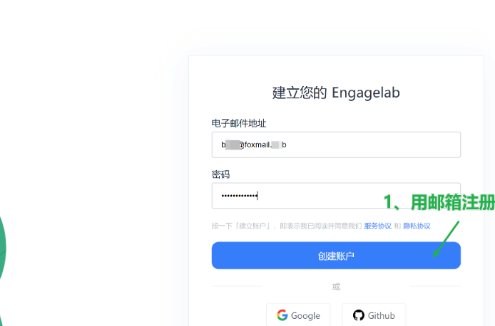
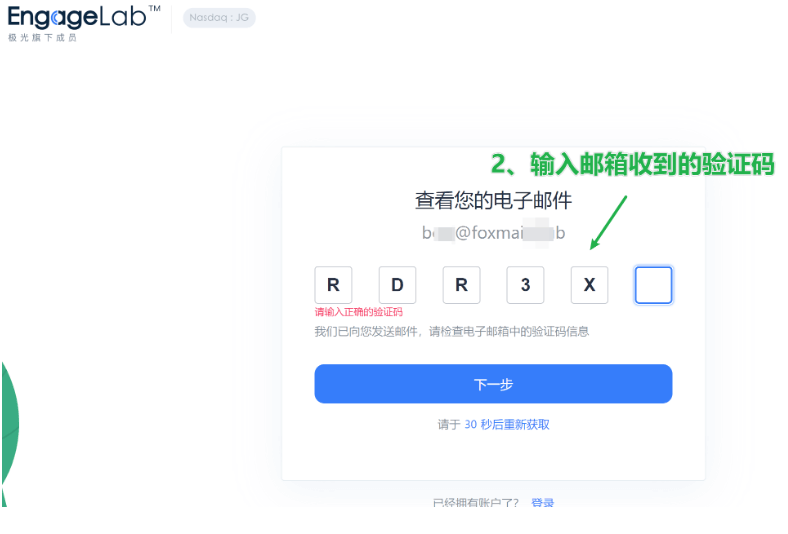
（2）建立组织如下图，选择自己站点的时区
组织名称：app名称即可，也可以自定义
组织网址：非必填
时区选择：自己站点时区即可（和站点时区一致就可以例如：站点UTC+8 极光找到UTC+8就行 ）
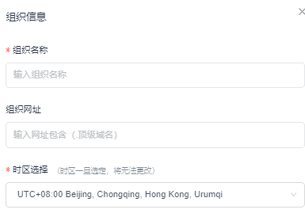
（3）创建成功后返回控制台
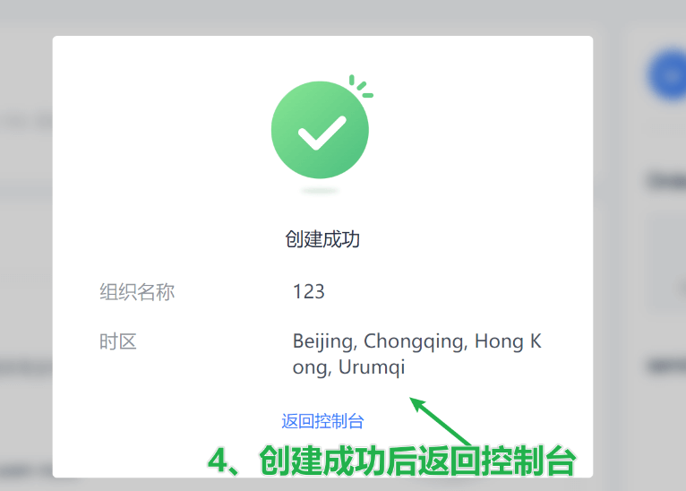
（4）创建成功，点击开通AppPush （待开通服务，控制台下滑找到，如下图）
（4）接入点注意只能选新加坡英文是：Singapore
应用名称：app名称即可，也可以自定义
服务接入点：只能选新加坡
应用图标：无需上传
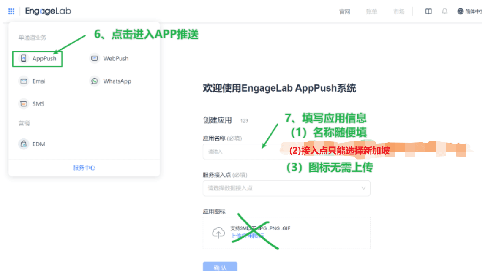
（5）数据中心选择提示，直接确认就好
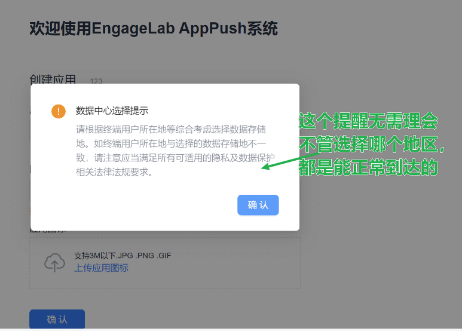
（6）创建成功，点击进入，应用信息，查看APPkey以及Master Secret
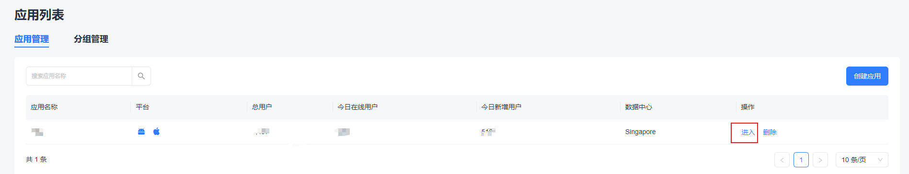
（7）将APPkey以及Master Secret复制到WG后台绑定
路径：应用信息，appkey，Master Secret 复制到wg后台，运营管理-极光推送-点修改，配置APPkey以及Master Secret
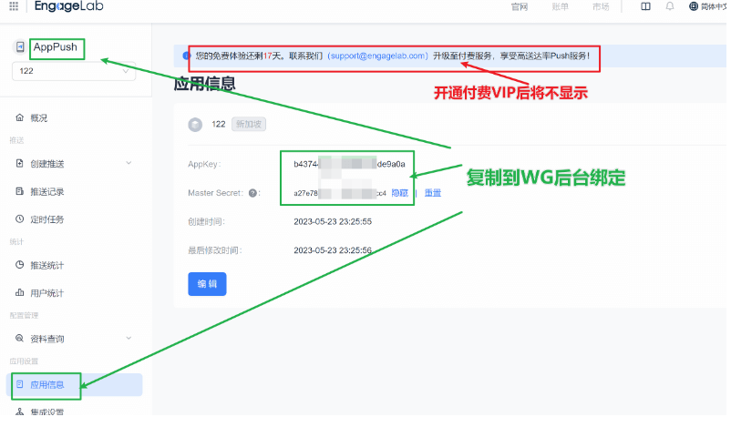
（8）将组织ID复制到WG后台绑定
路径：右上角，语言切换后面，查看所有组织，将组织ID复制到wg后台，运营管理-极光推送-点修改，配置组织ID
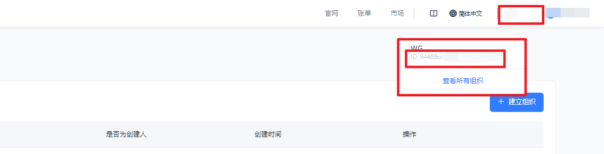
（9）wg后台配置了组织ID和APPkey以及Master Secret，就可以选择极光推送开通付费按钮，选择要开通的套餐进行开通并加白
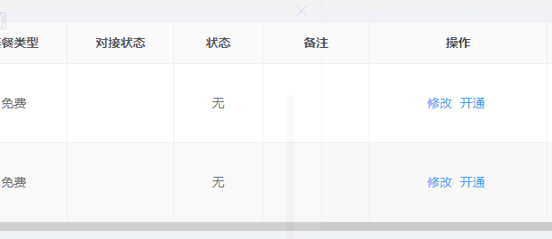
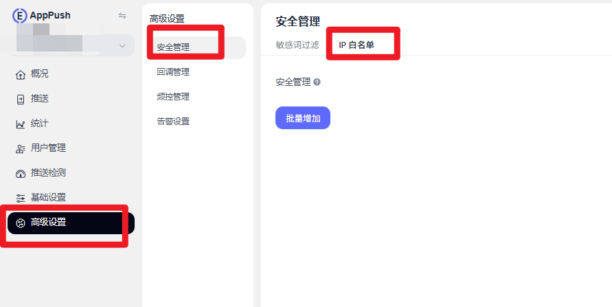
（10）开通以后，我们进行推送配置
APP集成生效
Android集成生效：先到WG站点后台》APP包管理》复制Android包名》到海外极光后台》选择AppPush》应用设置》【集成设置】页面》填写包名
（特别注意：包名和key是捆绑一体的，一旦填写不能修改，否则要重新创建和开通付费）
简单总结：WG后台找到安卓包名，复制配置到极光后台集成设置-Android 设置应用包名，点击保存即可
至于下方厂商部分可以不配置。跳过
填写完包名保存，然后开通FCM （FCM是为了离线推送+提高送达率，不配置只能打开app收到推送）
FCM开通教程
（1）FireBase 埋点配置：
选填，Firebase(https://firebase.google.com/)
是Google旗下的一款实时数据云服务平台，旨在让APP提供一个实时响应的数据服务，该平台适用在IOS、Android、web前端等各种跨平台上 ，登录firebase后台添加应用，获取json文件添加后台即可配置完成。
（极光推送只需要配置安卓，IOS不需要配置）
具体步骤：
a.需要使用gmail邮箱注册一个firebase账号，网站地址：https://firebase.google.com
b.firebase注册完成之后，创建项目，填写项目名称，点击继续，完成创建（FCM所有可以下一步的都点击下一步，没有特殊选项，都用默认即可，只有配置安卓包名的时候必须与后台，运营管理-打包app-安卓包名一致，不然不生效）
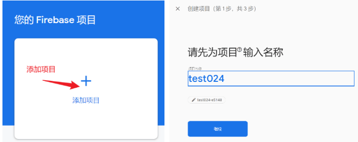
c.完成项目创建，添加应用
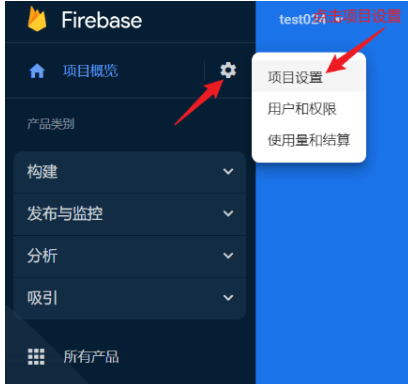
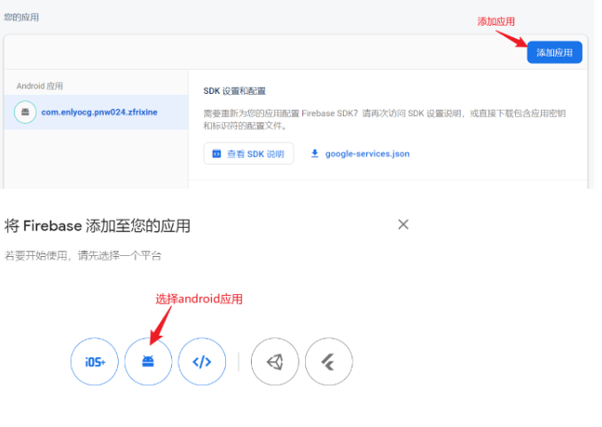
其他随意，包名必须准确，是安卓包名（运营管理-打包app-安卓包名一致，不然不生效）
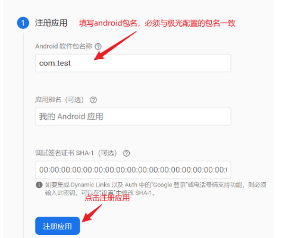
注册成功，点击下载google-services.json
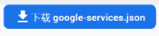
下载成功，用txt打开，复制内容 粘贴到wg后台 ，运营管理-三方埋点-APP埋点-FireBase，如下图，不用选择默认json，粘贴就好
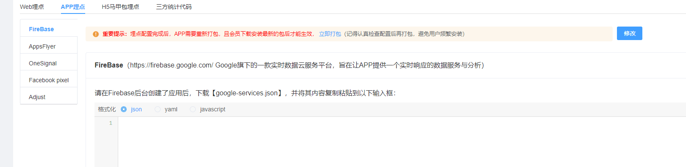
保存成功，如果提示格式忽略即可，点击保存
e.配置应用私钥
回到firebase的项目设置，一定要选java，生成密钥
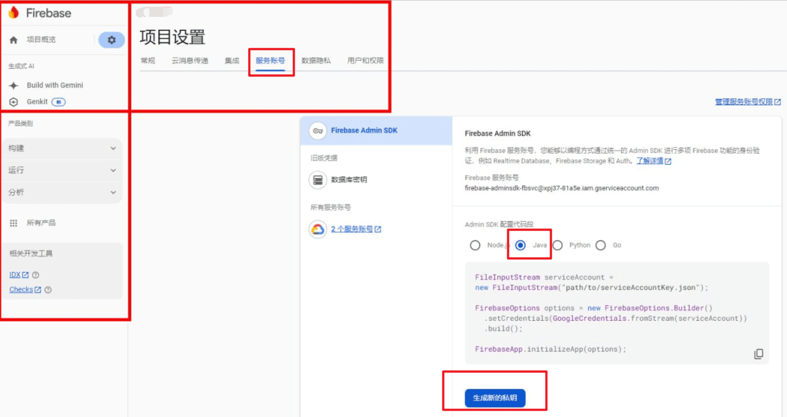
将下载后的文件配置到极光后台
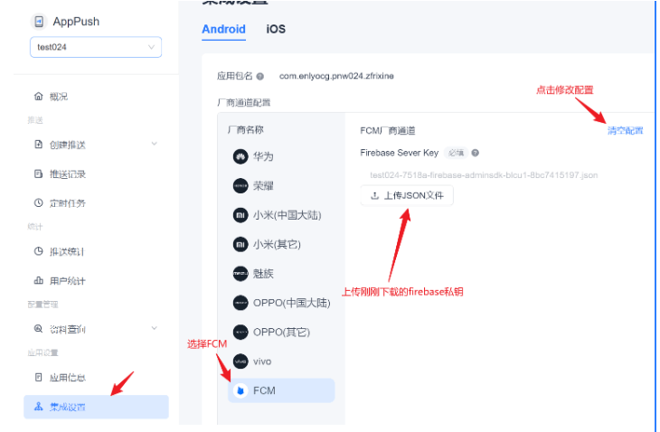
上传完成后，点击保存完成配置 需要重新打包，重新下载，安卓推送才能生效
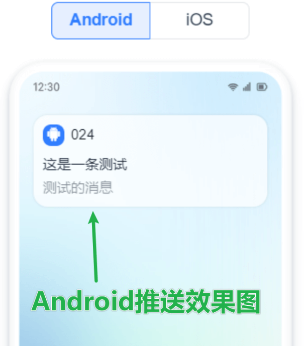
打包APP
打包说明：点击右上角重新生成iOS/Android包,可选择不同版的APP包生成，前提条件需APP包配置--配置APP相关参数信息；若持续出现打包失败情况，可以再次尝试，如果还失败，请马上与我们联系
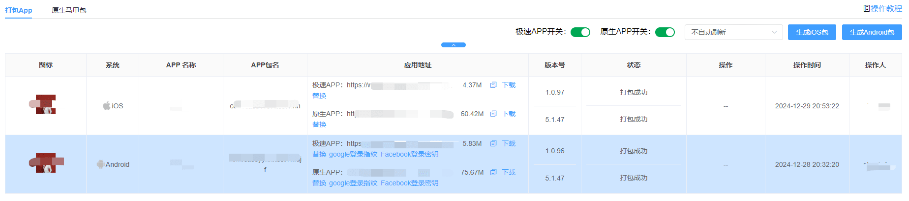
页面操作说明：由于暂时分3种状态（打包中/打包失败/打包成功），以下简述对应操作按钮作用：
极速版与原生版开关：开启/关闭，开启后可进行打包该版本的包，关闭则无法打包且不支持下载
a1.极速版：是H5套壳（相当于马甲包的B面），类型是app
a2.原生版：默认加载大厅相关资源，游戏需进行更新下载资源
重新生成：即重新生成对应app包
替换：用于APP包报毒，三方处理加固后，包上传下载
下载：下载APP应用
- 高级配置（不推荐）：默认极光已覆盖所有手机厂商80%机型（如下表），但部分机型需要到各厂商单独申请开发者账号，并配置参数，详见教程https://www.engagelab.com/zh_CN/docs/app-push/client-sdk-reference/android-sdk/application-guide-for-manufacturer-channel-parameters。
- 极光国内外用户支持情况概述：
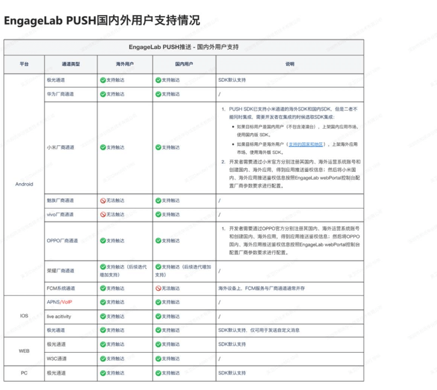
（11）iOS集成生效：海外极光后台》选择AppPush》应用设置》集成设置》IOS页面，鉴权方式选择 “iOS 证书配置”，上传苹果开发者 .p12 证书
具体步骤
1）iOS证书可以找技术支持申请
如果有苹果开发者账号可以提供账号信息，由我司开发代为申请，如果没有苹果开发者账号，可以使用我司资源，但是苹果证书容易风控，风控就要换证书，会存在无法续签要更换包名申请新的证书的情况，请知悉）上传密码会和证书一起提供
2）上传以后回到运营管理-app包管理，打包
3）打包完成，下载ipa，去超级签更新版本
4）重新下载app，注册/登录检测
特别注意：需要和超级签商确认是否支持极光推送，不支持需要更换超级签，如果支持让他们打开推送权限，这个功能默认都是关闭的，需要超级签开启
上传可以选生产 ，其他都不更改配置用默认，填入密码，保存即可
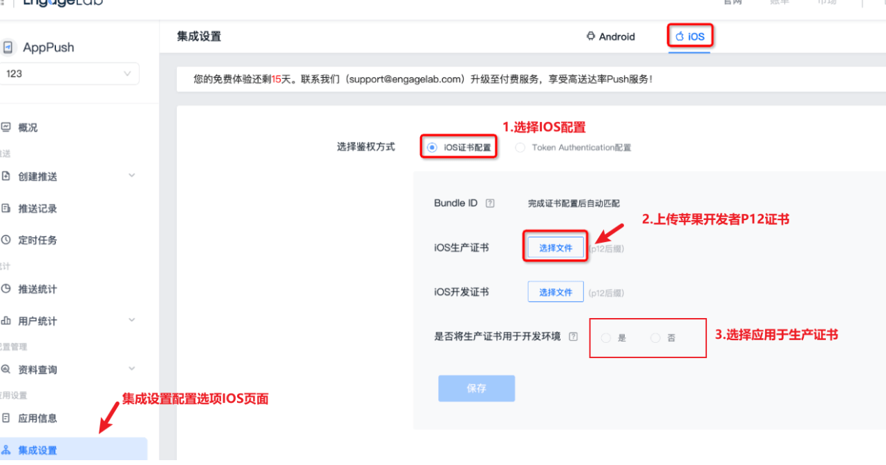
配置完成，IOS需要重新打包，重新下载，推送才能生效
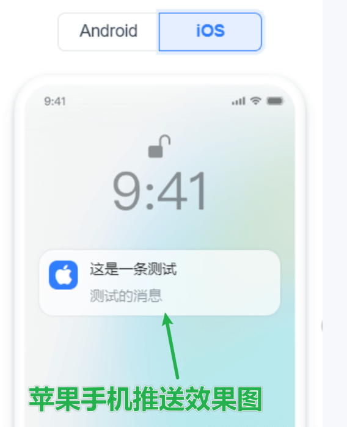
（12）回到控制台继续创建webpush，如果不会返回控制台，点击下图logo
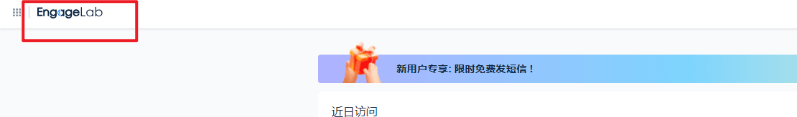
继续下滑，待开通找到web push
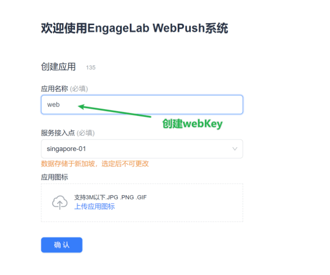
创建成功，点击进入，应用信息，查看Webkey以及Master Secret
将Webkey以及Master Secret复制到WG后台绑定
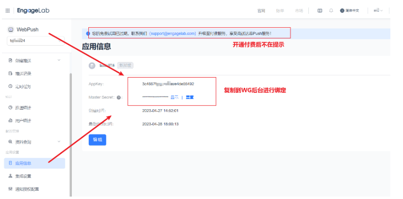
开通付费
1，运营管理-极光推送-点击，开通付费（APP和web要分别开通，key和密钥在极光后台获取，组织IDapp和web填写一样的，参考创建app push 和web push的教程）
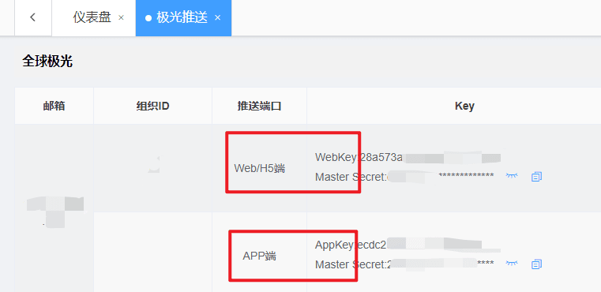
（13）WebPush集成生效
Web 推送集成生效：WebPush》应用设置》【集成设置】页面》填写网站域名，web 推送只支持 https 协议，域名地址请勿输入首页面地址外的其它地址。
（特别注意：域名和key是捆绑一体的，一旦填写不能修改，否则要重新创建和开通付费，域名和WG后台对应KEY配置域名一致）。
web一些浏览器会默认关闭推送功能，测试过程中如果没效果，需要打开推送功能才能收到
路径：运营管理-域名管理-web大厅域名，全部都要配置到极光后台
状态如果是未接入，需要访问该域名以后，回到极光后台刷新即可
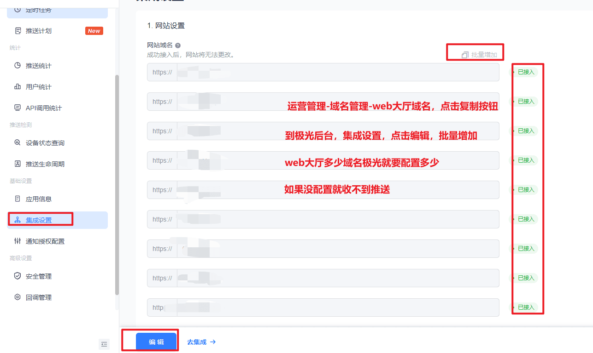
到此步，安卓推送成功，IOS推送成功，WEB成功推送，就配置完了，可以使用
额外配置
通知授权配置
通知授权一定要配置，选择引导申请，内容以及按钮都是可以自定义
例如
内容：关注送礼
确认和取消按钮颜色可以设置（小技巧，取消按钮的字体可以设置白色）
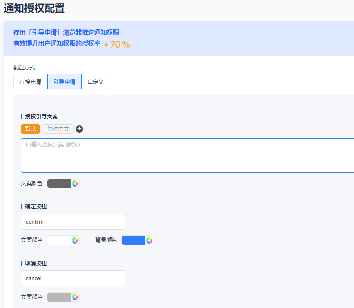
弹窗时机，等建议默认
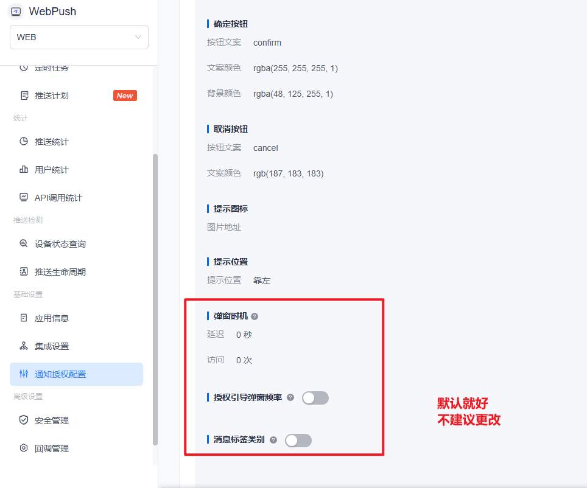
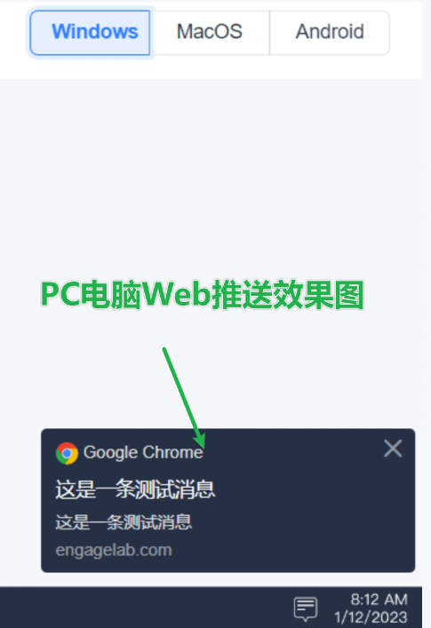 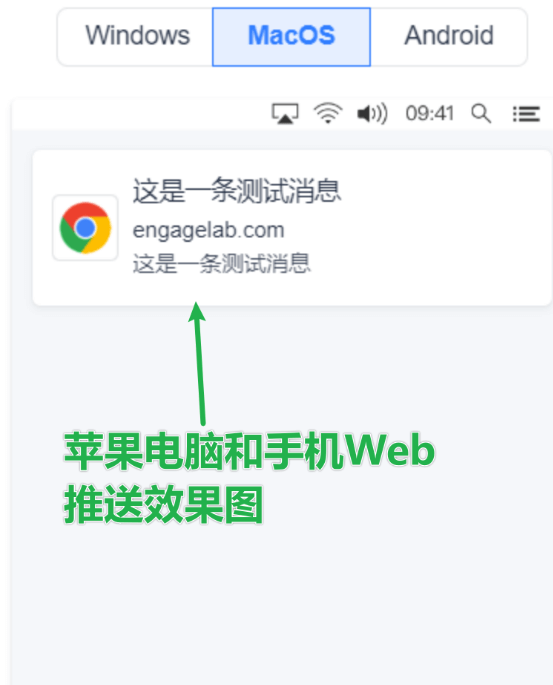 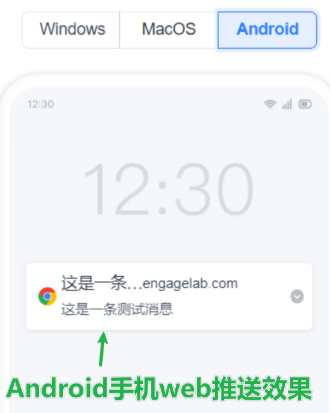
其他深度教程
（1）其他教程：https://www.engagelab.com/zh_CN/docs/app-push/quick-access/open-service
（2）APP技术集成推送SDK材料说明： https://go48pg.yuque.com/go48pg/egmmm2/yfsg6r?#
（3）Web技术集成推送SDK材料说明： https://go48pg.yuque.com/go48pg/egmmm2/haw4lcq0stxm5ezd?#
（4）Push功能名词解析：https://docs.jiguang.cn/jpush/intro/concept
（5）开通其他功能教程：https://www.engagelab.com/zh_CN/docs/app-push/product-overview
二、IOS以及安卓如何发送图片
1.全球极光后台ios推送图片
（1）注意图片地址要正确
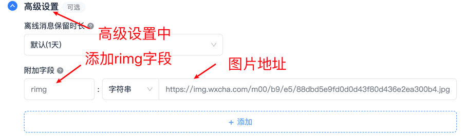
效果：
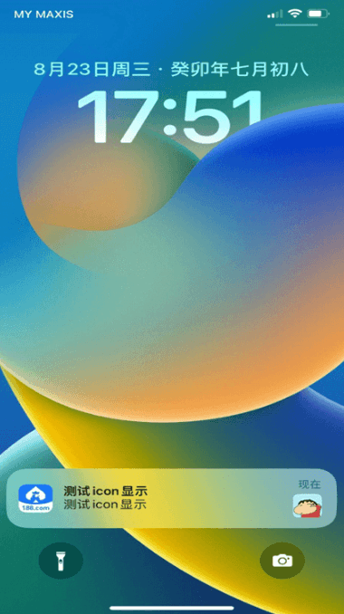
（2）添加副标题说明：
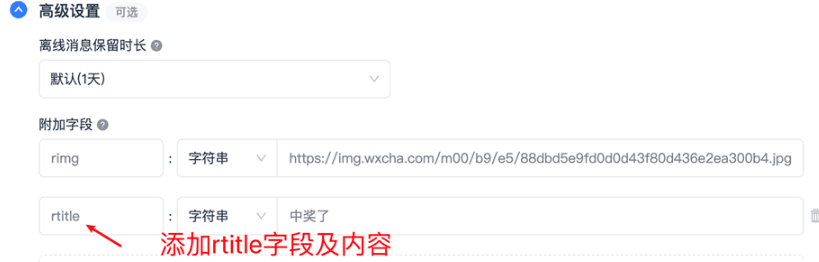
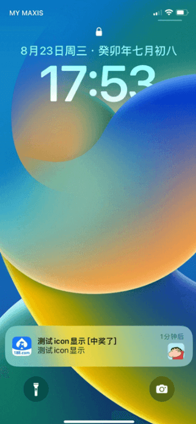
2，全球极光后台安卓推送图片
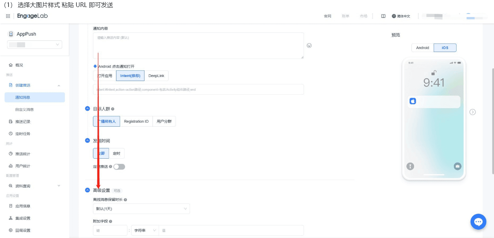
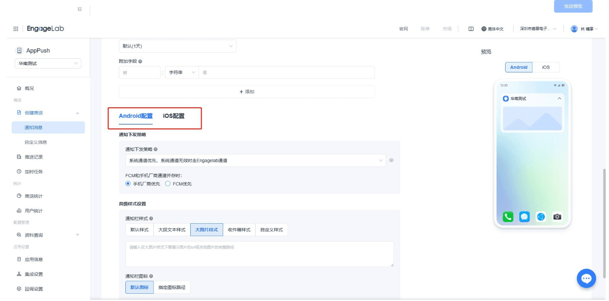
极光推送,大厅无法正常接收常见问题
1.为什么用户已经登录了,但是后台无法使用通过regid指定推送?
答:用户登录后,从来未刷新过页面,就不会往后台推送它的regid,用户至少需要刷新过一次页面,才会推送regid.
2.为什么后台已经配置了Webkey,但是大厅仍无法接收到极光推送?
答:请检查一下后台配置的Webkey是否错误/已过期/失效等.
3.如何自行检测页面极光接入是否正常?
第一步:打开开发者工具(如下图).
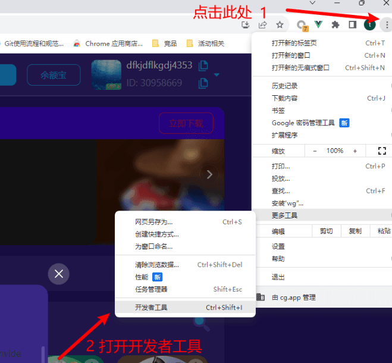
第二步,控制台输入 webPushLog (如下图).
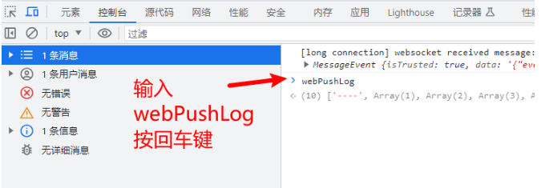
第三步,如果看到前面括号中的数字为 9 或10 则表示接入成功,如果不是,则接入失败.
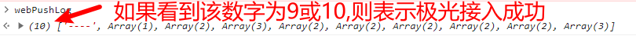
极光推送常见问题
一.ios收不到、安卓正常
基本上是超级签问题，可以找超级签客服确认是否支持，不行就更换超级签
二.ios正常、安卓收不到
1.开着游戏，推送广播无法收到
这个问题一般是由于配置不一致导致，检查极光后台配置与站点后台配置是否一致
如有不一致的情况，调整后重新打包
2.开着游戏推送广播能收到，杀掉游戏进程无法收到
这个问题是厂商通道FCM没有配置正确，需要在firebase上注册应用，配置密钥和google-services文件
3.指定玩家推送，无法收到
如果广播推送都正常，推送指定玩家无法收到（一般是玩家使用的app包版本不含极光推送配置信息，配置后打包以后下载的app才能使用极光推送）